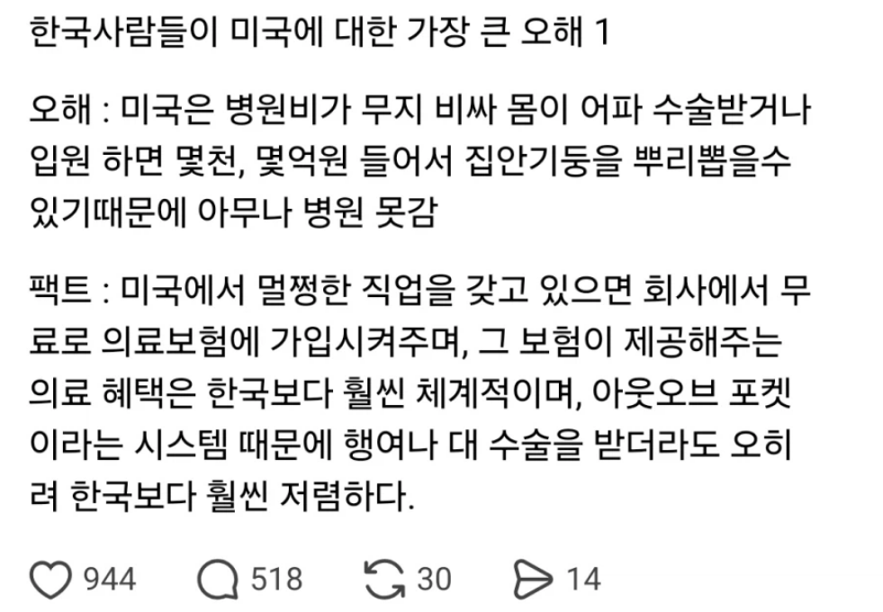

https://bbs.ruliweb.com/best/board/300143/read/76680082

????
https://bbs.ruliweb.com/best/board/300143/read/76680082

????
메디 케어는 65세 이상 거진 무료. 메디 케이드는 나이 제한 없는데 보통 26세?까지 케어 프로그램 있고 일반 성인이 받긴 좀 빡셈
저기서 '멀쩡한 회사'라는건 한국으로치면 삼하현 정도 되는 회사를 말하는거 아님?
일반적인 회사들은 대부분있긴 해.사대보험 같은 느낌. 근데 유튜버 같은 자영업자는 당연히 자체 보험 들어야 하고, 알바들은 직장마다 조금씩 다름
있어도 본인 Premium 도 높아서 내는돈 많음 좋은 회사는 전부 내줌
검머외들이 유튜브에서 밭갈이 하던데
솔직히 알았으니까 그 귀한 몸으로 후진국인 한국에 와서 치료 안 받았으면 좋겠음
내가 미간인데 저기서 중요한 내용이 빠졌음
미국인들은 개빡대가리+뒤가없는 뇌에서까지 테스토스테론이 나오는 유사인간들이라 병원에 갈정도가 되면 병이 존나 커져있다는게 문제임
그리고 먹는게 병 안키우는데 진짜 중요한데 마운자로든 마운자로할애비든 그냥 쓰레기같은 음식을 먹으니 답이 없음
전여친한테도 좀 건강하게 먹으라고 한식몇개 소개해주면 먹는척하다 ewww 이지랄하고 팝타르트나먹고 라떼에 시럽 범벅해서 물처럼 마시는데 노답임 진심
한식먹으면서 오우 떡포키 오우 킴취 이런애들 진심 미국인 상위 5퍼센트안에 드는애들임
이놈들 췌장크기 보고나니까 더 놀람 아니 이 기능으로도 당뇨가 걸린다고..?
미국살바엔 호주가 100배나은듯
대부분 의사 남편 두고 좋은 조건에 사는 줄 모르는 병신년들이 저런 댓글 주기적으로 싸질러 놓더라
의사면 대부분 하루아침에 바로 안 짜르니까
하루 아침에 짤릴 수도 있는 고소득자도 보험날라가는거 무서워하는데
바이든 아들도 인생 조질뻔 했다고 하지않았나?
한국에서 여행자보험 일주일치 검색만 해봐더
미국보다 비싼
나라는 없는데 ㅋㅋ
한국보다 비싼건 사실인데 직장인 보험 있으면 손발 벌벌 떨고 진통제로 끙끙 거리며 버티는 막장은 아님
이거 말고도 미국인들 채소 안먹고 냉동만 먹고 총기난사, 인종차별 지린다고 하는데
미국 와보니 저소득층도 충분히 패스트푸드보다 훨씬 싸게 신선한 고기, 야채 즐길 수 있고 인종차별도 당한적 없고 낮에는 안전함.
걍 중국인들이 한국은 수박이랑 고기 비싸서 못먹는다 이거 믿는거랑 뭐가 다른지 몰겠음.
미국도 사람사는 곳이니까 살만은 하겠지. 그런데 다른 나라랑 비교했을 때 의료비 부담이랑 총기사고 발생률이 압도적으로 높은건 사실임
죽창과 의료보험의 수호성인 루이지 만지오니
알겠으니까 좀 꺼져주렴.
직장인보험있음.
회사마다 보험비내주는 퍼센트가다름
전액지원도있고 10~30퍼정도본인부담하기도함
보험적용되어도 디덕터블은 내야함
보험마다갈수있는병원이정해져있음
지랄마라
미국에서 나름 괜찮은 곳에서 일하면서 의료보험 패키지도 꽤 비싼 걸로(15년전 당시 1인 보장 패키지로 월 60만원 수준) 가입했었는데 아플 때마다 의료보험 되는 병원 찾아가는거랑 의료보험 적용되는 병인지 아닌지 따져보는게 개빡치게 짜증났음ㅅㅂ
심지어 약처방도 보험이나 보험티어 따라 달라짐
목디스크로 고생할 때 겨우 시간내서 검사 받으러 갔더니 보험마다 검사 커버리지가 달라서 엑스레이는 되는데 mri는 보험사에 승인받아야 돠니깐 다음에 다시 오래ㅅㅂㅋㅋㅋ
하나하나 따져보면 진심 미국 의료보험 개미친 또라이임
보험료를 월 60만원 냈는데도 것도 어처구니가 없을 정도로 불편함
근데 이것도 제대로 된 직장 갖고 있는 경우에나 겨우 이 정도지 단순 저소득층 파트타임잡 갖고 있는 애들은 아프면 걍 헬게이트 열린다고 보면 된다
짤방에서 나오는 cvs가서 애드빌 고용량 사와서 먹으면서 버티는 애들이 여기서 나옴
한국처럼 누구나 동네 병원가서 진료 받고 옆에서 약 타오는 그런 환자친화적인 시스템이 전혀 아님
븅신같은소리하네 네트워크에 따라 갈수있는 병원한정되고 다 커버는 시발 지랄하네
브라이언 톰슨이 총 맞고 뒤질 때 사람들이 잘 죽었다라고 한 이유가 다 있지
미국으로 꺼저줬으면
돈 못벌면 메디케어인가 메디케이드로 거의 공짜라는데 팩트인가